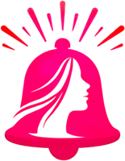

Calibã e a Bruxa
Mulheres, corpo e acumulação primitiva.

Alerta RosaO Alerta Rosa reúne informação clara, acolhimento e tecnologia para que mais pessoas reconheçam sinais cedo e saibam onde buscar ajuda.
Cada camada do projeto — conteúdo, rede de apoio, ferramentas digitais — se encaixa como peças de uma mesma pilha: sozinhas são frágeis, juntas sustentam.
Mulheres, corpo e acumulação primitiva.
Gênero, raça e classe como opressões que se cruzam.
Romance vencedor do Pulitzer sobre violência e libertação.
Diário de uma favelada.
Mulheres que revolucionaram o Brasil.
Como as imagens de beleza são usadas contra as mulheres.
Mitos e histórias do arquétipo da Mulher Selvagem.
Autobiografia sobre racismo, trauma e resistência.
Fatos, mitos e a experiência vivida das mulheres.
Um convite para repensar o que é ser mulher hoje.
Entendemos a realidade de cada comunidade antes de agir.
Traduzimos o essencial em linguagem simples e acessível.
Ligamos pessoas a serviços, profissionais e redes de apoio.
Seguimos junto, com lembretes e retorno contínuo.